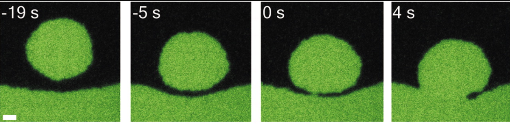
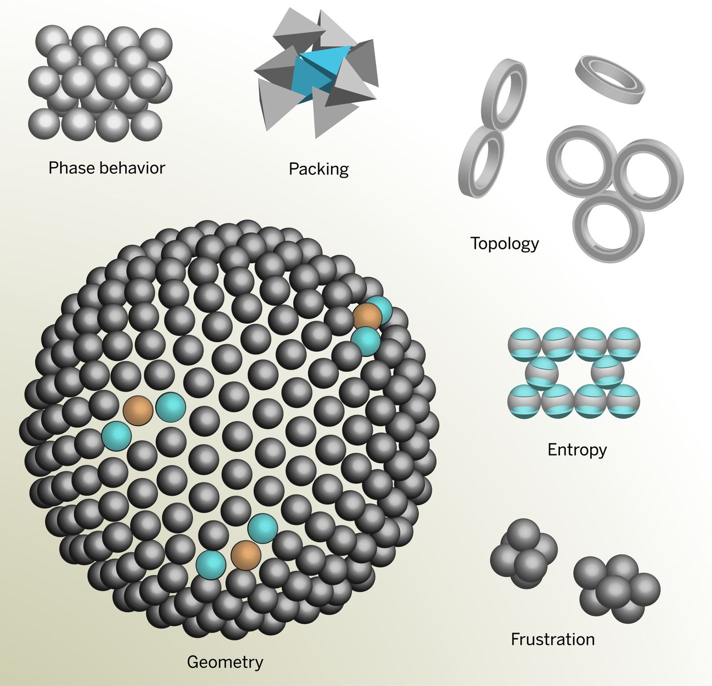
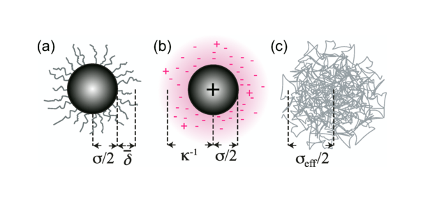
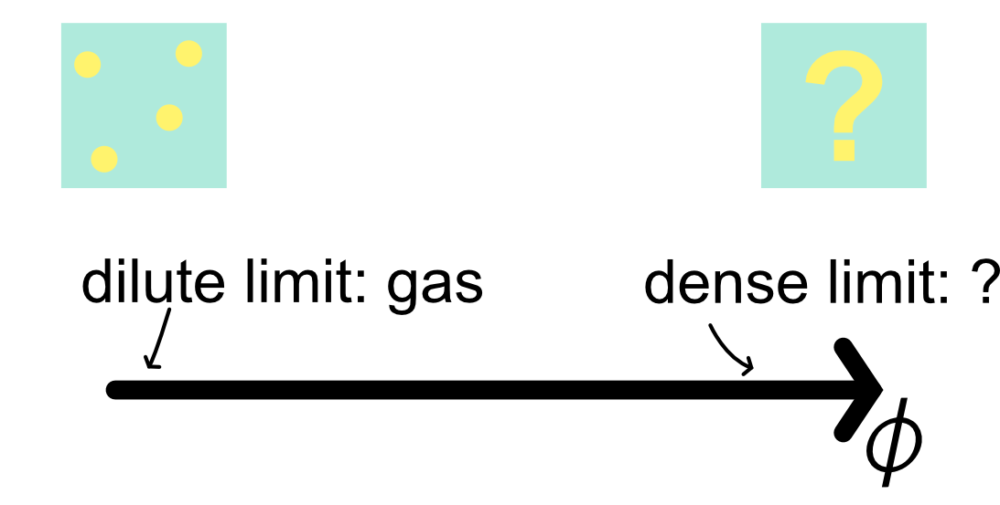
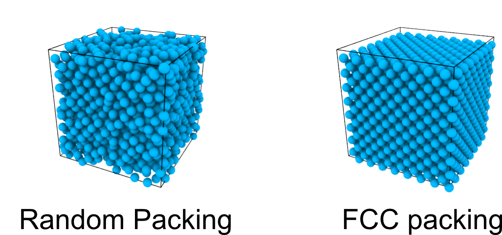
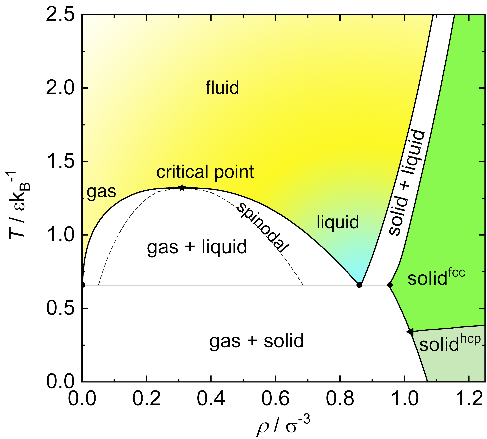

Complex Disordered Systems
Colloids as Big Atoms
Today
- Colloids as big atoms
- Colloidal hard spheres
- Phase diagram of hard spheres
- Metastability
- Phase diagrams of simple liquids
Colloids as big atoms
- Colloids can mimic atomic systems
- Serve as models for studying phase transitions, transformations, surface phenomena
- Examples:
- Hard-sphere colloids
- Charged-stabilized colloids


Colloidal hard spheres
True hard spheres do not exist. Colloidal hard spheres approximate the behaviour in many ways.

Hard spheres
Idealised hard spheres are impenetrable objects.
They are characterised by the simplest of potentials.
Phase behaviour of hard spheres
For a sphere of diameter \sigma, enormous simplification of the Boltzmann factor:
e^{-\beta U(r)} = \begin{cases} 0 & \text{if } r < \sigma \\ 1 & \text{if } r \geq \sigma \end{cases}
This simplification arises because the potential ( U(r) ) is either infinite (forbidden region) or zero (allowed region).
For this reason, hard spheres are entropy driven.
Constructing partition functions is then just counting valid configurations, linking geometry to thermodynamics.
- A good example: Asakura-Oosawa depletion, that we have already seen.
Valid configurations are sphere packings:
- The only relevant control parameter is the volume fraction \phi, defined as:
\phi = \frac{\pi}{6} \rho \sigma^3
where \rho=N/V is the number density.
Phase diagram of hard spheres
Since we have a single control parameter, the phase diagram is one-dimensional.
Changing temperature is immaterial to the free energy: it is a simple rescaling factor.
It is intuitive to guess the low density limit of hard spheres:
- few spheres in a box should behave similarly to an ideal gas
It is harder to guess the high density limit
We will gradually build our understanding from low to dense packing.
Hard spheres have a single control parameter, the packing fraction.
Low packing fractions
When treating the Asakura-Oosawa depletion we introduced the excluded volume. It is also key for hard spheres.
The distance of closest approach between two identical spheres is \sigma, which corresponds to the diameter of the spheres. The excluded volume of one particle is v_{\rm ex} =4\pi\sigma^3/3
At low densities, hard spheres are isolated and so no overlaps occur and the accessible volume for N spheres is V_{\rm accessible} = V-Nv_{\rm ex}
For phase behaviour, we need the thermodynamic potential. At constant volume and number of particles, the partition function is a measure of the accessible volume \mathcal{Z} = \frac{1}{N! \Lambda^{3N}} \int_{V_{\rm accessible}} d\mathbf{r}_1 \ldots d\mathbf{r}_N
where \Lambda is the thermal de Broglie wavelength \Lambda = h/\sqrt{2\pi mk_B T}.
Mass and temperature are factoring out.
Low packing fractions: entropy
We integrate over valid (non-overlapping) configurations such that |\mathbf{r}_i - \mathbf{r}_j| \geq \sigma for all i \neq j. This yields \mathcal{Z} = \dfrac{(V-Nv_{\rm ex}/2)^N}{N!\Lambda^{3N}},
with the 1/2 factor coming from the fact that we avoid double counting the excluded volume of pairs.
We immediately obtain the entropy as S = k_B \ln \mathcal{Z} = k_B \left[ N \ln(V - N v_{\rm ex}/2) - \ln N! - 3N \ln \Lambda \right]
Via Stirling’s approximation \ln N! = N\ln N -N we get S = k_B \left[ N \ln(V - N v_{\rm ex}/2) - (N \ln N - N) - 3N \ln \Lambda \right]
This can be rewritten as S = N k_B \left[ \ln\left( \frac{V - N v_{\rm ex}/2}{N \Lambda^3} \right) + 1 \right]
Low packing fraction: equation of state
The equation of state links the three relevant thermodynamic variables P,T and \phi
P = -\left(\dfrac{\partial F}{\partial V}\right)_{N,T} =T\left(\dfrac{\partial S}{\partial V}\right)_{N,T}= \dfrac{k_B T }{v-v_{\rm ex}/2}
This expression can be simplified (do it as an exercise) to obtain the equation of state
Z_{\rm comp}= \dfrac{PV}{Nk_BT}=\dfrac{1}{1-4\phi} \quad (\phi\ll 1)
where Z_{\rm comp} is compressibility factor (to not be confused with the partition function).
For small \phi we have
Z_{\rm comp} =\dfrac{PV}{Nk_BT} = 1+4\phi+O(\phi^2)
Note
Inspect this term and recognise that this illustrates that the dilute limit is an ideal gas + a correction.
Virial expansion
The expression Z_{\rm comp} = 1+4\phi+O(\phi^2) is just the simplest form of the more generic virial expansion, the perturbative series
Z_{\rm comp}= 1 + B_2 \rho + B_3 \rho^2+ \dots
The B_2, B_3, \dots are known as virial coefficients and for non-hard-sphere systems they also depend on temperature, B_2(T), B_3(T),\dots
They encode correlations (pairs, triplets and so on). In a generic setting
Z_N=\frac{1}{N!\Lambda^{3 N}} \int \cdots \int \exp \left[-\beta \sum_{i<j} U\left(r_{i j}\right)\right] d \mathbf{r}_1 \ldots d \mathbf{r}_N
can be re-written using the Mayer function f_{i j}=e^{-\beta u\left(r_{i j}\right)}-1 and e^{-\beta \sum_{i<j} U\left(r_{i j}\right)}=\prod_{i<j}\left(1+f_{i j}\right) yielding
Z_N=\frac{1}{N!\Lambda^{3 N}} \int \cdots \int \prod_{i<j}\left(1+f_{i j}\right) d \mathbf{r}_1 \ldots d \mathbf{r}_N
Cluster expansion and second virial
One can expand the product
\prod_{i<j}\left(1+f_{i j}\right)=1+\sum_{i<j} f_{i j}+\sum_{i<j, k<l}^{\text {distinct }} f_{i j} f_{k l}+\ldots The first term is the ideal gas, the second is clearly pair correlations (only pairwise distances).
This motivates one to define B_2(T)=-\frac{1}{2} \int f(r) d \mathbf{r}=-2 \pi \int_0^{\infty}\left[e^{-\beta U(r)}-1\right] r^2 d r
For hard spheres this results in B_2 = \frac{2\pi}{3} \sigma^3
So Z = 1 + \dfrac{2\pi}{3} \sigma^3\rho = 1+ 4\left( \dfrac{\pi}{6} \sigma^3\rho\right)=1+4\phi as we calculated earlier.
Low density limit: key points
Important
We can simply focus on the accessible volume and ignore overlap between exclusion volumes
We can focus on the configurational entropy and extract the equation of state relating P,T,\phi
The compressibility factor in terms of the packing fraction \phi is the most condensed expression and is Z_{\mathrm{comp}}=\frac{P V}{N k_B T}=1+4 \phi+O\left(\phi^2\right) highlighting the first non-trivial perturbation to the ideal gas
We can see this as an instance of the more general virial and cluster expansion formalism, which can be used for any fluid. Z_{\text {comp }}=1+B_2 \rho+B_3 \rho^2+\ldots
The first nontrivial correction is the second virial coefficient B_2(T)=-2 \pi \int_0^{\infty}\left[e^{-\beta U(r)}-1\right] r^2 d r
Dense packing
As we increase the packing fraction, the accessible (free) volume reduces rapidly and thermal motion is hindered.
Tight disordered (random) packing of spheres are described as jammed: link with glasses (in future lectures).
Densest packing reaches a maximum packing of around \phi_{\mathrm{rcp}} \approx 0.64: this is not unique and depends on the protocol of preparation.
Kepler’s conjecture (1611, proved only in 2017):
Densest packings are Face Centred Cubic (FCC) or Hexagonally Close Packed (HCP) \phi_{\max }=\frac{\pi}{3 \sqrt{2}} \approx 0.74

Dense packing
Q: Can purely repulsive spheres assemble spontaneously into an FCC crystal?
YES
- Entropy in AO interactions causes an effective interaction that has a minimum
- Disordered packings are less efficient than ordered ones
NO
- Hard sphere potential only prevents overlaps
- There is no minimum in the interaction potential to favour a crystal lattice and localisation
- Entropy is just disorder
- The matter was hotly debated in conferences in the 1950s and got to evenly split votes multiple times
Dense packing and crystallisation
Early computer simulations (molecular dynamics, Alder and Wainwright 1957, Monte Carlo, Wood and Jacobson (1957)) proved that crystallisation is possible.
The video shows a Monte Carlo simulation at packing \phi=0.49 for a small system of 32 particles. Small systems have enhanced fluctuations, leading to spontaneous freezing and unfreezing.
Dense packing: cell model
In an FCC cell, particles can move very little beyond their own diameter \sigma.
Assume that the volume per particle is v and the (geometrically constrained) close packed volume is v_{cp}.
The maximum displacement is \delta=\frac{\sigma}{\sqrt{2}}\left(\left(\frac{v}{v_{c p}}\right)^{1 / 3}-1\right)
The corresponding free volume is then v_f=\frac{4 \pi}{3} \delta^3 from which we can calculate the entropy S = -N k_B T \ln \left(v_f / \Lambda^3\right)
And the pressure P=T\left(\frac{\partial S}{\partial V}\right)_{N, T}=\frac{N k_B T}{v_{c p}} \frac{\left(v / v_{c p}\right)^{-2 / 3}}{\left(v / v_{c p}\right)^{1 / 3}-1}
Dense packing: cell model
Rearranging and expressing everything in terms of packing fraction \phi = \dfrac{\pi\sigma^3}{6v} yields Z_{\rm comp}=\frac{1}{1-\left(\phi / \phi_{c p}\right)^{1 / 3}}
This expression is completely different from the low density regime Z_{\text {comp }}^{\mathrm{low}}=1+B_2 \rho+B_3 \rho^2+\ldots
The incompatibility signals non-analyticity and hence a discontinuous phase transition: first order transition.
First order phase transitions are characterised by interfaces and coexistence between phases.
We should therefore observe phase coexistence in simulations and experiments of hard spheres.
Colloidal hard spheres: phase behaviour

Colloidal hard spheres: phase behaviour
In conclusion, the one-dimensional phase diagram of hard spheres is the following

Hard spheres phase diagram
Notice that the glass phase is purely non-equilibrium: if a system has enough time to relax, it will eventually form a crystal.
Beyond hard spheres: simple liquids
A simple liquid is a system of particles interacting via short-range, spherically symmetric (isotropic) pair potentials.
A very common model is the Lennard-Jones (LJ) potential U_{\mathrm{LJ}}(r) = 4\epsilon \left[ \left( \frac{\sigma}{r} \right)^{12} - \left( \frac{\sigma}{r} \right)^6 \right] where \epsilon sets the depth of the potential well (interaction strength) and \sigma is the particle diameter (distance at which U=0).
The r^{-12} term models steep repulsion, while r^{-6} describes the attractive tail.
The Lennard-Jones fluid exhibits rich phase behavior: gas, liquid, supercritical fluid and crystalline solid
The LJ model is widely used to study atomic and molecular liquids, and serves as a reference for understanding real fluids and their phase transitions.

Coexistence: Metastability and Instability
Lennard-Jones and hard sphere fluids present coexistence regions.
The binodal line determines phase coexistence. It is the locus where the free energy satisfies the condition of equal chemical potential and pressure between coexisting phases. When crossing the binodal, one enters a regime of metastability.

Coexistence: Metastability and Instability
The spinodal line marks the boundary of metastability. It is the limit of stability \frac{\partial^2 G}{\partial \phi^2}=0
Between the binodal and spinodal lines, the system is metastable, meaning it can persist in a non-equilibrium state for a finite time.
The nucleation time \tau is related to the free energy barrier \Delta G^* by an activated (also called Arrhenius) law \tau \propto \exp\left(\frac{\Delta G^*}{k_B T}\right)
Inside the spinodal there is no nucleation: coarsening occurs.
You have seen some of this physics when discussing the Ising model.